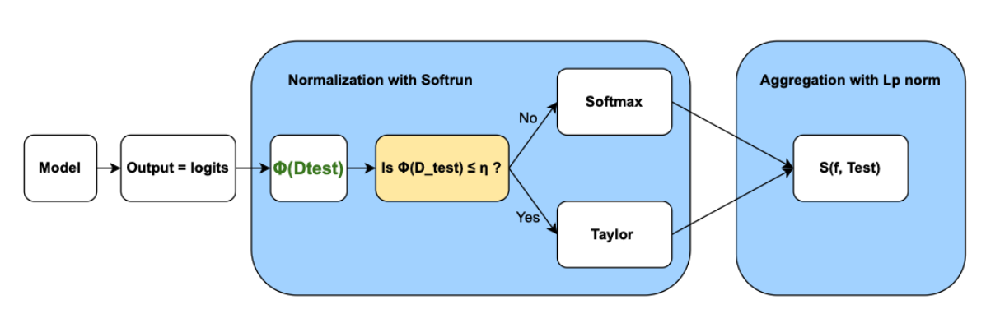

MaNo: A Smarter Way to Estimate Model Accuracy to Face Distribution Shifts Biais
MaNo: A Smarter Way to Estimate Model Accuracy to Face Distribution Shifts Biais
Authors: Alice Devilder, Sibylle Degos | Affiliations: IP Paris, Responsible AI | Published: 2025-02-10
Table of Contents
- Introduction
- Introducing MANO: A Two-Step Approach
- Empirical Success: MANO vs. Baselines
- Applications and Future Directions
- Conclusion
This is a blog post about the paper MaNo: Exploiting Matrix Norm for Unsupervised Accuracy Estimation Under Distribution Shifts, published by Renchunzi Xie, Ambroise Odonnat, Vasilii Feofanov, Weijian Deng, Jianfeng Zhang and Bo An in November 2024 and avalaible on arXiv.
Usually, in machine learning, data is divided into train/test sets. But you already know that! The problem is that there is often a shift in the way data is distributed or collected between train and test set. This shift distribution can disrupt predictive models, and can be a risk for AI safety. To illustrate, imagine a pedestrian image recognition model used for autonomous cars. Trained on images of pedestrians during the day, fails to detect pedestrians at night due to a shift in data distribution, leading to accidents. Traditional approaches to evaluate models rely on costly, computationally expensive ground-truth labels, making the evaluation difficult. Thanks to the solution in the paper “MANO: Exploiting Matrix Norm for Unsupervised Accuracy Estimation Under Distribution Shifts”, we can estimate model accuracy without labeled test data. MANO (Matrix Norm-based Accuracy Estimation) is presented as a novel solution, leveraging logits (the raw outputs of a model) to infer confidence and predict accuracy in an unsupervised manner. It is splitted in two steps:
- Softrun normalization to calibrate logits
- Lp norm to quantify decision boundary distances.
Let’s deep into MANO ! You will understand the theoretical foundations and empirical success that make this method very interesting to estimate the accuracy in an unsupervised environment.
Introduction
A common method for estimating accuracy without labels is analyzing a model’s logits, the raw outputs before softmax. However, existing methods suffer from overconfidence issues and biased predictions under distribution shifts.
Let’s understand why Logits Matter For Generalization Performance !
Logits represent the raw values generated by a model before they are passed through a normalization function, such as softmax. In simple terms, in classification tasks, logits are the raw scores associated with each class that help evaluate the model’s performance. These scores are particularly important for measuring a model’s generalization ability, i.e., its capacity to make accurate predictions on new, unseen data.
Mathematically, for a given input $x$, the model computes logits as:
$$ q = f(x) = (\omega_k^T z)_k \in \mathbb{R}^K $$
where $z$ is the learned feature representation, $\omega_k$ is the classifier’s weight vector, and $K$ is the number of classes. The magnitude of logits correlates with the distance to decision boundaries, making them valuable for accuracy estimation.
The concept of logits is based on the low-density separation assumption. According to this assumption, data points located near the decision boundaries of the model (i.e., where the model is uncertain) are more likely to be misclassified. This means that a model may struggle to make reliable predictions for these ambiguous examples. By analyzing logits, we can gain insights into the model’s confidence levels and its ability to generalize to unseen data.
Now you understand that logits are very important for generalisation performance, but one question remains…
Why Does softmax normalisation fail to alleviate the overconfidence issues of logits-based methods?
Softmax normalization is commonly used to transform these logits into class probabilities, which makes the predictions interpretable. By applying softmax, logits are converted into values between 0 and 1, representing the probability that each class is correct.
Mathematically, softmax is defined as:
However, this approach has a major issue: it is sensitive to prediction bias and can lead to overconfidence. In other words, if a model generates very high logits for a class (indicating strong confidence in its prediction), but that prediction is incorrect, it can skew the results. This phenomenon is largely due to the exponential function in the softmax formula, which amplifies the differences between logits. This can lead to significant errors, especially when the model is overly confident without being accurate.
This overconfidence bias is a critical issue when evaluating a model’s performance. To address this challenge, the paper introduces MANO, a novel method that leverages logits to estimate model accuracy without labeled data.
Introducing MANO: A Two-Step Approach
MANO addresses these challenges through a two-step process: Normalization with Softrun and Aggregation using Matrix Norms. Here is a scheme so you can visualize the process :

1. Normalization with Softrun
As explained before, Softmax is a very common activation function to transform logits into probabilities. But its exponential nature exaggerates differences between logits, making the model appear more confident than it actually is.
First, let’s calculate $\Phi(\mathcal{D}_{test})$, a function that measures the amount of complete information on the logits.
$\Phi(\mathcal{D}_{test}) =$
$$ -\frac{1}{NK} \sum_{j=1}^{N} \sum_{k=1}^{K} \log \left(\frac{\exp(q_{j,k})}{\sum_{j=1}^{K} \exp(\mathbf{q}_{i,j})} \right) $$
The general formula has the same structure of the softmax but with a dynamic $v(\mathbf{q}_i)$:
$$ \sigma(q_i) = \frac{v(q_i)}{\sum_{k=1}^{K} v(q_i)_k} \in \Delta_K$$
Thanks to $\Phi(\mathcal{D}_{test})$, it will determine whether to apply a Taylor or softmax normalization term. The function $v(q)$ is defined as:

When the model’s predictions are unreliable, Softrun applies a Taylor approximation rather than the softmax. The Taylor approximation smooths out the effect of large logits, preventing the model from being overly confident in any particular prediction. By contrast, when the dataset is well-calibrated, the function behaves like softmax, preserving probability distributions where confidence is warranted.

To recapitulate, there are 3 studied cases :
Case 1 - High Confidence, Low Bias When the model is both confident and has a low bias, its logits are highly reliable. This is an ideal case where we can safely apply softmax normalization without worrying about introducing additional bias. The softmax probabilities will be well-calibrated, and no extra correction is needed.
Case 2 - Low Confidence, High Bias If the model is not confident in its predictions and shows high bias, it means that its predictions are skewed but also uncertain. In this situation, we use the Taylor normalization. The smooth properties of Taylor normalization help mitigate bias while maintaining better uncertainty estimation.
Case 3 - Grey zone Sometimes, the model’s behavior doesn’t fit neatly into one category. In this scenario, different examples fall into different cases, making it difficult to determine the best normalization method. In these cases, it is safer to use Taylor normalization because it avoids exacerbating bias in the same way softmax does.
Besides, the output of this first step is scaled logits: $Q_i = \sigma(q_i) \in \Delta_K$.
2. Aggregation Using Matrix Norms
After normalization, MANO aggregates the logits using the Lp norm of the matrix $Q$, defined as:

where:
- $Q$ represents the matrix of softmax probabilities,
- $N$ is the number of test samples,
- $K$ is the number of classes,
- $σ(q_i)_k$ is the result of the step of normalisation seen before,
- $p$ is a hyperparameter controlling the sensitivity of the aggregation.
The normalization factor $\frac{1}{^p\sqrt{NK}}$ ensures that $S(f,D_{test})$ is independent of dataset size and number of classes, providing a standardized metric across different test distributions.
Advantages of Using the Lp Norm One of the main advantages of the Lp norm over the Nuclear Norm is its computational efficiency. The Lp norm is straightforward to compute, requiring only element-wise operations and summations. In contrast, nuclear norm-based methods involve Singular Value Decomposition (SVD), which is computationally expensive and less scalable for large datasets.
Effect of p on Aggregation Sensitivity

In the formula, the parameter p controls the sensitivity of the metric to high-confidence predictions:
- For small p, all predictions contribute relatively equally to the final score.
- As p increases, the aggregation puts more emphasis on confident predictions (i.e., softrun values close to 1).
- In the case p→∞, the norm becomes equivalent to the maximum prediction confidence.
In practice, the authors of the paper conducted a sensitivity analysis on 5 datasets using ResNet-18 and found that $p=4$ provides the best balance between capturing model confidence and maintaining robustness. This is illustrated in the experimental results on the right.
Now, let’s dive into the empirical results of MaNo across various datasets.
Empirical Success: MANO vs. Baselines
MANO has been evaluated against 11 baseline methods, including Rotation Prediction (Rotation) [2], Averaged Confidence (ConfS core) [3] and Entropy [4] amongst others. To show the versatility of Mano across different architectures, it has been evaluated across 3 different neural network architectures: ResNet18, ResNet50 [5], and WRN-50-2. The experiments were conducted on a range of classification tasks, including image recognition benchmarks such as CIFAR-10, CIFAR-100, TinyImageNet, and ImageNet, as well as domain adaptation datasets like PACS and Office-Home.
In this comprehensive evaluation, the authors have considered 3 types of distribution shifts: synthetic shifts, where models were tested against artificially corrupted images; natural shifts, which involved datasets collected from different distributions than the training data; and subpopulation shifts, where certain classes or groups were underrepresented in the training data. To evaluate Mano under synthetic shifts, the authors have used CIFAR-10C, CIFAR-100C, ImageNet-C, and TinyImageNet-C, covering various corruption types and severity levels. For natural shifts, they tested on OOD datasets from PACS, Office-Home, DomainNet, and RR1 WILDS. To assess subpopulation shifts, they used the BREEDS benchmark, including Living-17, Nonliving-26, Entity-13, and Entity-30 from ImageNet-C.

On the left, we can see a box plot of $R^2$ distribution showing the estimation robustness across different shifts on all datasets except ImageNet, using ResNet18. We observe that MANO consistently outperformed existing methods in all three scenarios (achieving the highest median estimation performance), demonstrating its robustness to varying degrees of domain shifts. For more details, you can find numerical results for the different shifts in the paper. For instance, MANO achieves $R^2 > 0.960$ and $ρ > 0.990$ under subpopulation shift, where as the performance of other baselines does not reach such consistently high levels.
Additionally, in the figure below, we can see a scatter plot illustrating the outperforming results of Mano on natural shift compared to Dispersion Score and ProjNorm on Entity-18 using ResNet-18.
We can observe that MANO scores demonstrate a robust linear relationship with ground-truth OOD errors, whereas other state-of-the-art baselines tend to produce biased estimations, particularly for high test errors. Therefore, MANO significantly boosts performance under the natural shift.
Unlike traditional approaches that either rely on softmax probabilities or require retraining on new distributions, MANO provides a label-free and computation-efficient accuracy estimation method that scales well across different domains. By using Softrun normalization and matrix norm aggregation, MANO achieves a stronger correlation with actual accuracy, ensuring that model performance estimates remain reliable even when faced with extreme distribution shifts.
Applications and Future Directions
Let’s discuss now how MANO can be applied in practice, the benefit of combining Softrun with other estimation baselines, and the limitations of this approach.
One crucial application in the real world is deployment risk estimation, where real-time insights into model reliability can be obtained without costly manual labeling. This is particularly useful for models deployed in dynamic environments, such as healthcare and autonomous systems, where distribution shifts are frequent and unpredictable.
Now, what is the impact of Softrun on other estimation baselines? The authors have conducted an ablation study to assess how Softrun enhances the performance of Nuclear [6], ConfScore [3], and MANO. As shown in the paper, Softrun significantly improves Nuclear’s $R^2$ score, particularly in datasets like Office-Home, where its performance increases from $0.692$ to $0.826$. These findings suggest that integrating Softrun into existing methods can improve their estimation reliability, making them more robust to poorly calibrated datasets.
Despite its strong theoretical foundation and empirical performance, MANO has certain limitations. One challenge is its reliance on the selection criterion parameter $η$ in Equation v, which requires careful tuning. To overcome this dependency, future research will focus on developing an automated approach to selecting the optimal normalization function without manual hyperparameter adjustments. Additionally, if multiple validation sets are available, as suggested in previous works ([5]; [6]), the selection of $η$ could be refined based on these datasets, further improving MANO’s adaptability and robustness across different tasks.
Conclusion
MANO represents a significant breakthrough in unsupervised accuracy estimation. By addressing logit overconfidence and introducing Softrun normalization, MANO provides a scalable, robust, and theoretically grounded approach for evaluating model accuracy under distribution shifts.
🔗 Code available at: MANO GitHub Repository
MANO isn’t just a step forward—it’s a leap toward trustworthy AI deployment in the wild!
References
1. Renchunzi Xie and Ambroise Odonnat and Vasilii Feofanov and Weijian Deng and Jianfeng Zhang and Bo An, MANO: Exploiting Matrix Norm for Unsupervised Accuracy Estimation Under Distribution Shifts, arXiv:2405.18979, 2024.
2. Deng, W., Gould, S., and Zheng, L. (2021). What does rotation prediction tell us about classifier accuracy under varying testing environments? In International Conference on Machine Learning (ICML), pages 2579–2589.
3. Hendrycks, D. and Gimpel, K. (2016). A baseline for detecting misclassified and out-of-distribution examples in neural networks. arXiv preprint arXiv:1610.02136.
4. Guillory, D., Shankar, V., Ebrahimi, S., Darrell, T., and Schmidt, L. (2021). Predicting with confidence on unseen distributions. In Proceedings of the IEEE/CVF international Conference on Computer Vision (ICCV), pages 1134–1144.
5. He, K., Zhang, X., Ren, S., and Sun, J. (2016). Deep residual learning for image recognition. In Proceedings of the IEEE Conference on Computer Vision and Pattern Recognition (CVPR), pages 770–778.
5. Deng, W., Suh, Y., Gould, S., and Zheng, L. (2023). Confidence and dispersity speak: Characterising prediction matrix for unsupervised accuracy estimation. arXiv preprint arXiv:2302.01094.
6. Deng, W. and Zheng, L. (2021). Are labels always necessary for classifier accuracy evaluation? In Proceedings of the IEEE/CVF Conference on Computer Vision and Pattern Recognition (CVPR), pages 15069–15078.